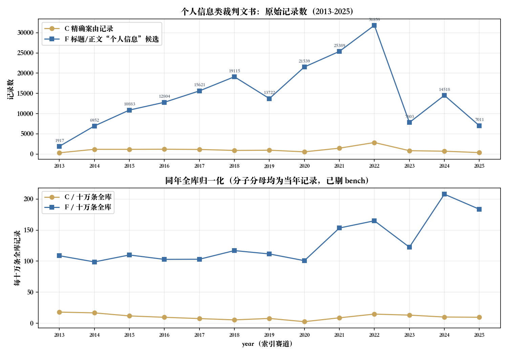
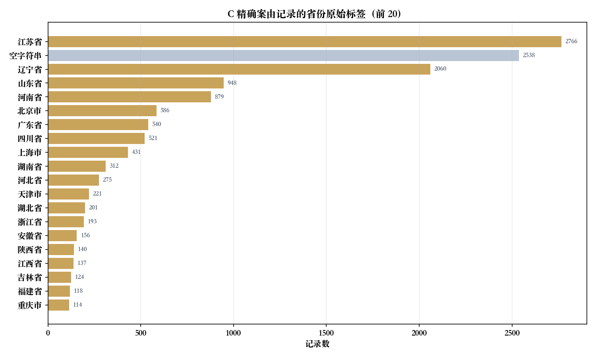

面向个人信息保护法与人格权实证课题：先把标签、全文、日期与文书粒度分开。本页未完成主文编码和一二审归并，因此不提供胜诉率、侵权认定比例或法律实施效果结论。
一、主题与集合：标签、文本候选各量什么
C为裸keyword字段cause精确等于「隐私权纠纷」「一般人格权纠纷」或「个人信息保护纠纷」的并集；F为标题或正文检索完整短语「个人信息」，各字段对ik_smart与ik_max_word取逻辑并集；U为C∪F。所有正式集合排除bench测试批次。三条案由之间无重叠：隐私权2,161＋一般人格权11,849＋个人信息保护105＝14,115。
| 集合 | 记录数 | 案号以「号」结尾的记录 | 原始相异案号约 |
|---|---|---|---|
| C 精确案由 | 14,115 | 13,116 | 10,991 |
| F 标题/正文「个人信息」 | 192,662 | 190,010 | 169,805 |
| U 并集 | 205,751 | 202,114 | 179,916 |
检索日期：2026-10-22；查询与原始聚合响应，键：C, F, U, C_and_F。记录为精确查询计数，原始相异案号为HLL估算。
C与F的重叠很小：C∩F只有1,026条，F−C为191,636条，C−F为13,089条。差集不是已确认漏标或错案。「个人信息保护纠纷」是较新的案由标签，全库仅105条，且几乎全部落在2021年之后；把它与两条人格权案由并列时，必须同时报出各自的量级，不能只报并集。
match(cause.t, 个人信息 隐私权 一般人格权, operator=or)命中80,332条，其中精确C为14,115条。该比例只衡量标签归属与分词行为，不是人工语义准确率；OR总数不能当作个人信息案件量。
检索日期：2026-10-22；查询与原始聚合响应，键：labels_tokenized_OR。记录为精确查询计数。
二、2013–2025：原始量与同年全库分母并列
归一化＝该集合当年记录÷同年全库记录×100000，分子分母都用year并排除bench；不是人口、企业数或法院受理量。year派生自索引date，部分批次可能是公开或采集时间，不保证裁判落款年。

| year | C记录 | C相异案号约 | 同年全库分母 | C/十万 | F记录 | F/十万 |
|---|---|---|---|---|---|---|
| 2013 | 1,762,537 | 317 | 316 | 17.99 | 1,917 | 108.76 |
| 2014 | 7,033,956 | 1,179 | 1,134 | 16.76 | 6,952 | 98.83 |
| 2015 | 9,894,747 | 1,173 | 1,138 | 11.85 | 10,883 | 109.99 |
| 2016 | 12,443,177 | 1,201 | 1,186 | 9.65 | 12,804 | 102.90 |
| 2017 | 15,147,489 | 1,145 | 1,123 | 7.56 | 15,621 | 103.13 |
| 2018 | 16,331,967 | 897 | 682 | 5.49 | 19,115 | 117.04 |
| 2019 | 12,290,542 | 956 | 541 | 7.78 | 13,722 | 111.65 |
| 2020 | 21,359,050 | 550 | 315 | 2.58 | 21,539 | 100.84 |
| 2021 | 16,548,198 | 1,458 | 953 | 8.81 | 25,389 | 153.42 |
| 2022 | 19,292,669 | 2,855 | 1,522 | 14.80 | 31,839 | 165.03 |
| 2023 | 6,365,236 | 836 | 649 | 13.13 | 7,803 | 122.59 |
| 2024 | 6,984,435 | 704 | 684 | 10.08 | 14,518 | 207.86 |
| 2025 | 3,818,342 | 370 | 357 | 9.69 | 7,011 | 183.61 |
检索日期：2026-10-22；查询与原始聚合响应，键：C, F, corpus_years。记录为精确查询计数，原始相异案号为HLL估算。
总数减全部year桶合计的缺年记录：C 474、F 3,549；其他年份见附档。C在2013–2020逐年下滑、2021–2022回升到峰值（2022年2,855条），随后2023–2025回落；F在2022年达31,839条峰值并维持高位，2024年按全库归一化达每十万207.86条。两条曲线的差异首先来自口径：C受标签覆盖影响，F受正文可得性与批次构成影响。2023年公开与收录收缩使分子分母均变化，归一化仍不能消除选择偏差，不把曲线当真实纠纷发生量或法律效果。
三、地域、程序与标题文类

| 省份原始标签 | C记录 | 占C |
|---|---|---|
| 江苏省 | 2,766 | 19.60% |
| 空字符串 | 2,538 | 17.98% |
| 辽宁省 | 2,060 | 14.59% |
| 山东省 | 948 | 6.72% |
| 河南省 | 879 | 6.23% |
| 北京市 | 586 | 4.15% |
| 广东省 | 540 | 3.83% |
| 四川省 | 521 | 3.69% |
| 上海市 | 431 | 3.05% |
| 湖南省 | 312 | 2.21% |
| 河北省 | 275 | 1.95% |
| 天津市 | 221 | 1.57% |
| 湖北省 | 201 | 1.42% |
| 浙江省 | 193 | 1.37% |
| 安徽省 | 156 | 1.11% |
| 陕西省 | 140 | 0.99% |
| 江西省 | 137 | 0.97% |
| 吉林省 | 124 | 0.88% |
| 福建省 | 118 | 0.84% |
| 重庆市 | 114 | 0.81% |
| 广西壮族自治区 | 107 | 0.76% |
| 云南省 | 98 | 0.69% |
| 山西省 | 78 | 0.55% |
| 贵州省 | 68 | 0.48% |
| 内蒙古自治区 | 66 | 0.47% |
| 甘肃省 | 59 | 0.42% |
| 黑龙江省 | 56 | 0.40% |
| 新疆维吾尔自治区 | 52 | 0.37% |
| 海南省 | 29 | 0.21% |
| 宁夏回族自治区 | 22 | 0.16% |
| 青海省 | 12 | 0.09% |
| 西藏自治区 | 9 | 0.06% |
| 最高人民法院 | 7 | 0.05% |
| 新疆维吾尔自治区高级人民法院生产建设兵团分院 | 2 | 0.01% |
检索日期：2026-10-22；查询与原始聚合响应，键：C。空字符串与字段缺失保留，省份异形标签未合桶。
江苏省2,766条与空字符串2,538条并列前两位，辽宁省2,060条明显高于其通常体量；这种形状更可能来自集中管辖、批量程序或批次构成，而不是当地侵权更高发。本页没有重算最大当事人簇，也不据此排除集中效应。
| 程序集合 | C记录 |
|---|---|
| 一审（1／0301／民事一审／一审等） | 7,940 |
| 二审（2／0302／民事二审／二审等） | 1,907 |
| 未映射（含执行、空值与「其他」） | 4,268 |
检索日期：2026-10-22；查询与原始聚合响应，键：C。原始程序桶保存在附档。
一审合并1、0301、民事一审、一审、刑事一审、行政一审；二审合并2、0302、民事二审、二审、刑事二审、行政二审；其他未映射。C里未映射比例偏高（30.2%），原因是这批案由进入了执行实施、首次执行等程序桶。案号初／终仅作诊断，未跨程序合并；文书量比不是上诉率。
| 标题文类（按顺序互斥） | C记录 | 占C |
|---|---|---|
| 判决书 | 5,171 | 36.63% |
| 裁定书 | 5,770 | 40.88% |
| 调解书 | 104 | 0.74% |
| 决定书 | 13 | 0.09% |
| 通知书 | 1,230 | 8.71% |
| 标题未识别 | 1,827 | 12.94% |
检索日期：2026-10-22；查询与原始聚合响应，键：cls_excl_*。记录为精确查询计数。
标题按判决书、裁定书、调解书、决定书、通知书顺序识别，后类排除前类，其余未识别。C里裁定书多于判决书，说明相当一部分记录是程序性处理；标题分类仍是词面规则，不能替代逐案文种审计，程序性裁定更不能当实体拒绝。
四、两组共现：身份标识类词与个人信息保护法引用
第一组为C正文中的身份标识与处理类词；第二组为全库正文的同一批词，用于对照「词在哪里出现」。每项取双分词器并集，词间可以重叠，不相加。phrase是分词位置匹配，不等于逐字子串验证，更不是立场或裁判结果编码。
| 正文词 | C命中 | C共现率 | 全库命中 |
|---|---|---|---|
| 身份证号码 | 333 | 2.36% | 12,487 |
| 删除 | 552 | 3.91% | 8,143 |
| 征信 | 299 | 2.12% | 15,364 |
| 手机号码 | 208 | 1.47% | 22,529 |
| 生物识别 | 49 | 0.35% | 335 |
| 个人信息保护法 | 26 | 0.18% | 685 |
| 人脸识别 | 25 | 0.18% | 10,083 |
| 大数据 | 11 | 0.08% | 599 |
| 敏感个人信息 | 5 | 0.04% | 204 |
| 个人信息处理者 | 5 | 0.04% | 138 |
| 告知同意 | 1 | 0.01% | 16 |
检索日期：2026-10-22；查询与原始聚合响应，键：C, F。记录为精确查询计数。
「身份证号码」333条（2.36%）与「删除」552条（3.91%）是C内最常出现的两类词，但两者都可能出现在诉请、抗辩、法条或他案转述里。「个人信息保护法」在C内仅26条，「敏感个人信息」「个人信息处理者」各5条、「告知同意」1条——这些是标准的个人信息保护法术语，在本库的判决正文里几乎不出现。它更可能说明文书撰写习惯与显名引用稀少，而不说明法律没有适用。
| year | C记录 | C内「个人信息」 | C内共现率 |
|---|---|---|---|
| 2016 | 1,201 | 56 | 4.66% |
| 2017 | 1,145 | 61 | 5.33% |
| 2018 | 897 | 29 | 3.23% |
| 2019 | 956 | 20 | 2.09% |
| 2020 | 550 | 3 | 0.55% |
| 2021 | 1,458 | 109 | 7.48% |
| 2022 | 2,855 | 290 | 10.16% |
| 2023 | 836 | 81 | 9.69% |
| 2024 | 704 | 91 | 12.93% |
| 2025 | 370 | 160 | 43.24% |
检索日期：2026-10-22；查询与原始聚合响应，键：C_years_co。记录为精确查询计数。
| year | C内正文含「个人信息保护法」 |
|---|---|
| 2021 | 0 |
| 2022 | 13 |
| 2023 | 2 |
| 2024 | 2 |
| 2025 | 9 |
检索日期：2026-10-22；查询与原始聚合响应，键：C（聚合 pipl_by_year）、C_years_co。全库正文含该法名的记录合计685条。
个人信息保护法自2021年11月1日施行；本页不会因此把2021年11月前后切成「实施前后组」。C内该法名的显名引用在2022年13条、2023年2条、2024年2条、2025年9条；2021年当年为0条。要研究新法适用，须逐份核落款日期、争议发生时间与所援引条款，再建立程序关联，索引year只用于收录画像。
五、可复现方法与不可外推的边界
- 这是全量聚合，未抽样，也未声称语义纯度。若需人工复核，应按dataset分层，记录random_score种子和n，保留批内平手偏差及编码表；本页没有凭空补样本。
- F的body口径在ik_smart下为192,227条、ik_max_word下为190,659条；title口径分别为14,403与14,398条。分析器差异会造成零命中或差额，F取两字段双分析器逻辑并集。
- 正文空白、公开事由占位、缺段或截断会改变共现；exists(body)不证明可用全文。全量补修不保证每份完整，本轮未实读正文完整性、不报完整率。
- 案由缺失和文本引述影响C/F两套分母；记录数不是独立纠纷，HLL原始案号不是规范化精确去重。不要把本页与历史文章的口径或案号估算直接相减。
- 研究新法须逐份核落款日期、争议发生时间与适用条款。任何细分样本少于30，无法得出统计结论。
六、附录：查询、聚合与引用
judgments索引，size:0、track_total_hits:true；所有正式响应未超时、failed shards=0。附档仅含查询及汇总，无姓名、案号明细或正文。每个表的来源键对应附档请求与返回；正式引用请带检索日期、集合、案号处理及统计限制。
{
"C": {
"bool": {
"should": [
{ "term": { "cause": "隐私权纠纷" } },
{ "term": { "cause": "一般人格权纠纷" } },
{ "term": { "cause": "个人信息保护纠纷" } }
],
"minimum_should_match": 1
}
},
"F": {
"bool": {
"should": [
{ "match_phrase": { "title": { "query": "个人信息", "analyzer": "ik_max_word" } } },
{ "match_phrase": { "body": { "query": "个人信息", "analyzer": "ik_max_word" } } }
],
"minimum_should_match": 1
}
}
}实际请求对每个字段同时提交ik_smart与ik_max_word两种analyzer并取并集；上例为可读缩略。完整请求与返回见附档。
需要更细的交叉（按法院层级、按法院、按年份×案由、按身份标识类型）与逐案清单，可通过数据报告服务定制：先约定检索口径、日期核验、案号归并与正文可用性，再确定交付与验收。
常见问题
统计的是全国个人信息案件总数吗？
不是。C为精确案由记录14,115条（隐私权2,161、一般人格权11,849、个人信息保护105），F为标题或正文含「个人信息」的全文候选192,662条，并集U为205,751条；都是当前索引记录，不是官方总量或已证实完整覆盖。
标题或正文提到「个人信息」就算一起隐私权案件吗？
不算。C∩F只有1,026条，F里绝大多数并不在三个案由标签下。词面出现可能是诉请、抗辩、法条引用、他案转述或与个人信息无关的表述，本页不把它当侵权认定。
为什么案由与全文的年度走势差异这么大？
标签缺失与批次构成会改变召回。全文可包含其他案由的引用，精确标签也可能没有可用正文。两条曲线不能互相替代，更不能直接当作真实诉讼发生趋势。
个人信息保护法引用分布能证明该法有效果吗？
不能。全库正文含「个人信息保护法」的只有685条，C内仅26条（2022年13、2023年2、2024年2、2025年9）。这只能说明显名引用极少，不能得出实施效果、案件增减或因果结论。
相异案号是否等于独立纠纷？
不等于。本页以案号以「号」结尾的格式子集，对原始caseNo作HLL估算；未归一化括号空格，未关联一审二审，不能与历史规范化案号数混比。
怎样申请论文数据与逐案清单？
通过数据报告服务先约定检索口径、日期核验、程序关联、正文可用性与人工编码，再确定交付和验收。本页不提供胜诉率或新法因果结论。
文书查 · 深圳星谱网络科技有限公司。仅供研究方法参考，不构成法律意见。检索日期：2026-10-22。